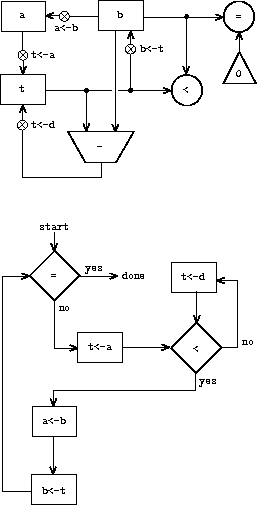

{% include JB/setup %}
{% raw %}
<div>


<a name="%_sec_5.1" id="%_sec_5.1"></a>
<h2 class="calibre23"><a href="book-Z-H-4.html#%_toc_%_sec_5.1" class="calibre19">5.1  Designing Register Machines</a></h2><p class="calibre1">


<a name="%_idx_5462" id="%_idx_5462"></a><a name="%_idx_5464" id="%_idx_5464"></a><a name="%_idx_5466" id="%_idx_5466"></a><a name="%_idx_5468" id="%_idx_5468"></a><a name="%_idx_5470" id="%_idx_5470"></a><a name="%_idx_5472" id="%_idx_5472"></a>

To design a register machine, we must design its <em class="calibre10">data paths</em>
(registers and operations) and the <em class="calibre10">controller</em> that sequences
these operations.  To illustrate the design of a simple register
machine, let us examine Euclid's Algorithm, which is used to compute
<a name="%_idx_5474" id="%_idx_5474"></a>the greatest common divisor (GCD) of two integers.  As we saw in
<a name="%_idx_5476" id="%_idx_5476"></a>section <a href="book-Z-H-11.html#%_sec_1.2.5">1.2.5</a>, Euclid's Algorithm can be carried out by an iterative
process, as specified by the following procedure:</p><p class="calibre1">


</p><p class="calibre1"></p><p class="calibre1"><tt class="calibre16">(define (gcd a b)<br class="calibre5"/>
  (if (= b 0)<br class="calibre5"/>
      a<br class="calibre5"/>
      (gcd b (remainder a b))))<br class="calibre5"/></tt></p><p class="calibre1"></p><p class="calibre1"></p><p class="calibre1">

A machine to carry out this algorithm must keep track of two numbers,
<em class="calibre10">a</em> and <em class="calibre10">b</em>, so let us assume that these numbers are stored in two
registers with those names.  The basic operations required are testing
whether the contents of register <tt class="calibre16">b</tt> is zero and computing the
remainder of the contents of register <tt class="calibre16">a</tt> divided by the contents
of register <tt class="calibre16">b</tt>.  The remainder operation is a complex process,
but assume for the moment that we have a primitive device that
computes remainders.  On each cycle of the GCD algorithm, the contents
of register <tt class="calibre16">a</tt> must be replaced by the contents of register <tt class="calibre16">b</tt>, and the contents of <tt class="calibre16">b</tt> must be replaced by the remainder of
the old contents of <tt class="calibre16">a</tt> divided by the old contents of <tt class="calibre16">b</tt>.
It would be convenient if these replacements could be done
simultaneously, but in our model of register machines we will assume
that only one register can be assigned a new value at each step.  To
accomplish the replacements, our machine will use a third
“temporary” register, which we call <tt class="calibre16">t</tt>.  (First the remainder
will be placed in <tt class="calibre16">t</tt>, then the contents of <tt class="calibre16">b</tt> will be placed
in <tt class="calibre16">a</tt>, and finally the remainder stored in <tt class="calibre16">t</tt> will be placed
in <tt class="calibre16">b</tt>.)</p><p class="calibre1">

<a name="%_idx_5478" id="%_idx_5478"></a><a name="%_idx_5480" id="%_idx_5480"></a>We can illustrate the registers and operations required for this
machine by using the data-path diagram shown in
figure <a href="#%_fig_5.1">5.1</a>.  In this
diagram, the registers (<tt class="calibre16">a</tt>, <tt class="calibre16">b</tt>, and <tt class="calibre16">t</tt>) are represented
by rectangles.  Each way to assign a value to a register is
indicated by an arrow with an <tt class="calibre16">X</tt> behind the head, pointing from
the source of data to the register.  We can think of the <tt class="calibre16">X</tt> as a
button that, when pushed, allows the value at the source to “flow”
into the designated register.  The label next to each button is the
name we will use to refer to the button.  The names are arbitrary, and
can be chosen to have mnemonic value (for example, <tt class="calibre16">a&lt;-b</tt> denotes
pushing the button that assigns the contents of register <tt class="calibre16">b</tt> to
register <tt class="calibre16">a</tt>).  The source of data for a register can be another
register (as in the <tt class="calibre16">a&lt;-b</tt> assignment), an operation result (as in
the <tt class="calibre16">t&lt;-r</tt> assignment), or a constant (a built-in value that
cannot be changed, represented in a data-path diagram by a triangle
containing the constant).</p><p class="calibre1">

An operation that computes a value from constants and the contents
of registers is represented in a data-path diagram by a trapezoid
containing a name for the operation.  For example, the box marked <tt class="calibre16">rem</tt> in figure <a href="#%_fig_5.1">5.1</a> represents an
operation that computes the remainder of the contents of the
registers <tt class="calibre16">a</tt> and <tt class="calibre16">b</tt> to which it is attached.  Arrows
(without buttons) point from the input registers and constants to the
box, and arrows connect the operation's output value to registers.
A test is represented by a circle containing a name for the test.  For
example, our GCD machine has an operation that
tests whether the contents of register
<tt class="calibre16">b</tt> is zero.  A test also has arrows from its input
<a name="%_idx_5482" id="%_idx_5482"></a><a name="%_idx_5484" id="%_idx_5484"></a>registers and constants, but it has no output
arrows; its value is used by the controller rather than by the data
paths.  Overall, the data-path diagram shows the registers and
operations that are required for the machine and how they must be
connected.  If we view the arrows as wires and the <tt class="calibre16">X</tt> buttons as
switches, the data-path diagram is very like the wiring diagram for a
machine that could be constructed from electrical components.</p><p class="calibre1">

</p><p class="calibre1">

<a name="%_fig_5.1" id="%_fig_5.1"></a></p><p class="calibre1"></p><div class="calibre4"><table width="100%" class="calibre6"><tr class="calibre7"><td class="calibre8"></td></tr><caption class="calibre29"><div class="calibre4"><b class="calibre9">Figure 5.1:</b>  Data paths for a GCD machine.</div></caption><tr class="calibre7"><td class="calibre8">

</td></tr></table></div><p class="calibre1"></p><p class="calibre1">

<a name="%_idx_5486" id="%_idx_5486"></a><a name="%_idx_5488" id="%_idx_5488"></a>In order for the data paths to actually compute GCDs, the buttons must
be pushed in the correct sequence.  We will describe this sequence in
terms of a controller diagram, as illustrated in
figure <a href="#%_fig_5.2">5.2</a>.  The elements of the controller
diagram indicate how the
data-path components should be operated.  The rectangular boxes in the
controller diagram identify data-path buttons to be pushed, and the
arrows describe the sequencing from one step to the next.  The diamond
in the diagram represents a decision.  One of the two sequencing
arrows will be followed, depending on the value of the data-path test
identified in the diamond.  We can interpret the controller in terms
of a physical analogy: Think of the diagram as a maze in which a
marble is rolling.  When the marble rolls into a box, it pushes the
data-path button that is named by the box.  When the marble rolls into
a decision node (such as the test for <tt class="calibre16">b</tt>   = 0), it leaves the
node on the path determined by the result of the indicated test.
Taken together, the data paths and the controller completely describe
a machine for computing GCDs.  We start the controller (the rolling
marble) at the place marked <tt class="calibre16">start</tt>, after placing numbers in
registers <tt class="calibre16">a</tt> and <tt class="calibre16">b</tt>.  When the controller reaches <tt class="calibre16">done</tt>, we will find the value of the GCD in register <tt class="calibre16">a</tt>.

<a name="%_fig_5.2" id="%_fig_5.2"></a></p><p class="calibre1"></p><div class="calibre4"><table width="100%" class="calibre6"><tr class="calibre7"><td class="calibre8">
</td></tr><caption class="calibre29"><div class="calibre4"><b class="calibre9">Figure 5.2:</b>  Controller for a GCD machine.</div></caption><tr class="calibre7"><td class="calibre8">

</td></tr></table></div><p class="calibre1"></p><p class="calibre1">

</p><p class="calibre1"><a name="%_thm_5.1" id="%_thm_5.1"></a>
<b class="calibre9">Exercise 5.1.</b>  <a name="%_idx_5490" id="%_idx_5490"></a>Design a register machine to compute factorials using the iterative
algorithm specified by the following procedure.  Draw data-path and
controller diagrams for this machine.</p><p class="calibre1">

</p><p class="calibre1"></p><p class="calibre1"><tt class="calibre16">(define (factorial n)<br class="calibre5"/>
  (define (iter product counter)<br class="calibre5"/>
    (if (&gt; counter n)<br class="calibre5"/>
        product<br class="calibre5"/>
        (iter (* counter product)<br class="calibre5"/>
              (+ counter 1))))<br class="calibre5"/>
  (iter 1 1))<br class="calibre5"/></tt></p><p class="calibre1"></p><p class="calibre1">
</p><p class="calibre1">
</p><p class="calibre1">

<a name="%_sec_5.1.1" id="%_sec_5.1.1"></a>
</p><h3 class="calibre26"><a href="book-Z-H-4.html#%_toc_%_sec_5.1.1" class="calibre19">5.1.1  A Language for Describing Register Machines</a></h3><p class="calibre1">


<a name="%_idx_5492" id="%_idx_5492"></a>
Data-path and controller diagrams are adequate for representing simple
machines such as GCD, but they are unwieldy for describing large
machines such as a Lisp interpreter.  To make it possible to deal with
complex machines, we will create a language that presents, in textual
form, all the information given by the data-path and controller
diagrams.  We will start with a notation that directly mirrors the diagrams.</p><p class="calibre1">

</p><p class="calibre1">

We define the data paths of a machine by describing the registers and
the operations.  To describe a register, we give it a name
and specify the buttons that control assignment to it.  We give each
of these buttons a name and specify the source of the data that enters
the register under the button's control.  (The source is a register, a
constant, or an operation.)
To describe an operation, we give
it a name and specify its inputs (registers or constants).</p><p class="calibre1">

We define the controller of a machine as a sequence of <a name="%_idx_5494" id="%_idx_5494"></a><em class="calibre10">instructions</em> together with <a name="%_idx_5496" id="%_idx_5496"></a><a name="%_idx_5498" id="%_idx_5498"></a><em class="calibre10">labels</em> that identify <em class="calibre10">entry
points</em> in the sequence. An instruction is one of the following:
</p><p class="calibre1"></p><ul class="calibre24"><li class="calibre25">The name of a data-path button to push to assign a value to
a register.  (This corresponds to a box in the controller diagram.)<p class="calibre1">

<a name="%_idx_5500" id="%_idx_5500"></a><a name="%_idx_5502" id="%_idx_5502"></a></p></li><li class="calibre25">A <tt class="calibre16">test</tt> instruction, that performs a specified test.<p class="calibre1">

<a name="%_idx_5504" id="%_idx_5504"></a><a name="%_idx_5506" id="%_idx_5506"></a><a name="%_idx_5508" id="%_idx_5508"></a><a name="%_idx_5510" id="%_idx_5510"></a></p></li><li class="calibre25">A conditional branch (<tt class="calibre16">branch</tt> instruction) to a
location indicated by a controller label, based on the result of the
previous test.  (The test and branch together correspond to a diamond
in the controller diagram.)  If the test is false, the controller
should continue with the next instruction in the sequence.  Otherwise,
the controller should continue with the instruction after the label.<p class="calibre1">

<a name="%_idx_5512" id="%_idx_5512"></a><a name="%_idx_5514" id="%_idx_5514"></a></p></li><li class="calibre25">An unconditional branch (<tt class="calibre16">goto</tt> instruction) naming a
controller label at which to continue execution.
</li></ul><p class="calibre1">
The machine starts at the beginning of the controller instruction
sequence and stops when execution reaches the end of the sequence.
Except when a branch changes the flow of control, instructions are
executed in the order in which they are listed.</p><p class="calibre1">

<a name="%_fig_5.3" id="%_fig_5.3"></a></p><p class="calibre1"></p><div class="calibre4"><table width="100%" class="calibre6"><tr class="calibre7"><td class="calibre8"><p class="calibre1"></p><p class="calibre1"><tt class="calibre16">(data-paths<br class="calibre5"/>
 (registers<br class="calibre5"/>
  ((name a)<br class="calibre5"/>
   (buttons ((name a&lt;-b) (source (register b)))))<br class="calibre5"/>
  ((name b)<br class="calibre5"/>
   (buttons ((name b&lt;-t) (source (register t)))))<br class="calibre5"/>
  ((name t)<br class="calibre5"/>
   (buttons ((name t&lt;-r) (source (operation rem))))))<br class="calibre5"/><br class="calibre5"/>
 (operations<br class="calibre5"/>
  ((name rem)<br class="calibre5"/>
   (inputs (register a) (register b)))<br class="calibre5"/>
  ((name =)<br class="calibre5"/>
   (inputs (register b) (constant 0)))))<br class="calibre5"/><br class="calibre5"/>
(controller<br class="calibre5"/>
 test-b                           <em class="calibre10">; label</em><br class="calibre5"/>
   (test =)                       <em class="calibre10">; test</em><br class="calibre5"/>
   (branch (label gcd-done))      <em class="calibre10">; conditional branch</em><br class="calibre5"/>
   (t&lt;-r)                         <em class="calibre10">; button push</em><br class="calibre5"/>
   (a&lt;-b)                         <em class="calibre10">; button push</em><br class="calibre5"/>
   (b&lt;-t)                         <em class="calibre10">; button push</em><br class="calibre5"/>
   (goto (label test-b))          <em class="calibre10">; unconditional branch</em><br class="calibre5"/>
 gcd-done)                        <em class="calibre10">; label</em><br class="calibre5"/></tt></p><p class="calibre1"></p><p class="calibre1">
</p><p class="calibre1"></p><p class="calibre1"></p></td></tr><caption class="calibre29"><div class="calibre4"><b class="calibre9">Figure 5.3:</b>  A specification of the GCD machine.</div></caption><tr class="calibre7"><td class="calibre8">

</td></tr></table></div><p class="calibre1"></p><p class="calibre1">

Figure <a href="#%_fig_5.3">5.3</a> shows the GCD machine described in
this way.  This example only hints at the generality of these
descriptions, since the GCD machine is a very simple case: Each
register has only one button, and each button and test is used only
once in the controller.</p><p class="calibre1">

Unfortunately, it is difficult to read such a description.  In order
to understand the controller instructions we must constantly refer
back to the definitions of the button names and the operation names,
and to understand what the buttons do we may have to refer to the
definitions of the operation names.  We will thus transform our
notation to combine the information from the data-path and controller
descriptions so that we see it all together.</p><p class="calibre1">

To obtain this form of description, we will replace the arbitrary
button and operation names by the definitions of their behavior.  That
is, instead of saying (in the controller) “Push button <tt class="calibre16">t&lt;-r</tt>”
and separately saying (in the data paths) “Button <tt class="calibre16">t&lt;-r</tt> assigns
the value of the <tt class="calibre16">rem</tt> operation to register <tt class="calibre16">t</tt>” and “The
<tt class="calibre16">rem</tt> operation's inputs are the contents of registers
<a name="%_idx_5516" id="%_idx_5516"></a><a name="%_idx_5518" id="%_idx_5518"></a><a name="%_idx_5520" id="%_idx_5520"></a><a name="%_idx_5522" id="%_idx_5522"></a><a name="%_idx_5524" id="%_idx_5524"></a><a name="%_idx_5526" id="%_idx_5526"></a><tt class="calibre16">a</tt> and <tt class="calibre16">b</tt>,” we will say (in the controller) “Push the
button that assigns to register <tt class="calibre16">t</tt> the value of the <tt class="calibre16">rem</tt>
operation on the contents of registers <tt class="calibre16">a</tt> and <tt class="calibre16">b</tt>.”
Similarly, instead of saying (in the controller) “Perform the <tt class="calibre16">=</tt> test” and separately saying (in the data paths) “The <tt class="calibre16">=</tt> test operates on the contents of register <tt class="calibre16">b</tt> and the
constant 0,” we will say “Perform the <tt class="calibre16">=</tt> test on the
<a name="%_idx_5528" id="%_idx_5528"></a><a name="%_idx_5530" id="%_idx_5530"></a>contents of register <tt class="calibre16">b</tt> and the constant 0.”  We will omit the
data-path description, leaving only the controller sequence.  Thus,
the GCD machine is described as follows:</p><p class="calibre1">

</p><p class="calibre1"></p><p class="calibre1"><tt class="calibre16">(controller<br class="calibre5"/>
 test-b<br class="calibre5"/>
   (test (op =) (reg b) (const 0))<br class="calibre5"/>
   (branch (label gcd-done))<br class="calibre5"/>
   (assign t (op rem) (reg a) (reg b))<br class="calibre5"/>
   (assign a (reg b))<br class="calibre5"/>
   (assign b (reg t))<br class="calibre5"/>
   (goto (label test-b))<br class="calibre5"/>
 gcd-done)<br class="calibre5"/></tt></p><p class="calibre1"></p><p class="calibre1"></p><p class="calibre1">

This form of description is easier to read than the kind illustrated
in figure <a href="#%_fig_5.3">5.3</a>, but it also has disadvantages:

</p><p class="calibre1"></p><ul class="calibre24"><p class="calibre1">

</p><li class="calibre25">It is more verbose for large machines,
because complete descriptions of the data-path elements are repeated
whenever the elements are mentioned in the controller instruction
sequence.  (This is not a problem in the GCD example, because each
operation and button is used only once.)  Moreover, repeating the
data-path descriptions obscures the actual data-path structure of the
machine; it is not obvious for a large machine how many registers,
operations, and buttons there are and how they are interconnected.<p class="calibre1">

</p></li><li class="calibre25">Because the controller instructions in a machine definition
look like Lisp expressions, it is easy to forget that they are
not arbitrary Lisp expressions.  They can notate only legal machine
operations.  For example, operations can operate directly only on
constants and the contents of registers, not on the results of other
operations.
</li></ul><p class="calibre1">
In spite of these disadvantages, we will use this register-machine
language throughout this chapter, because we will be more concerned with
understanding controllers than with understanding the elements and
connections in data paths.  We should keep in mind,
however, that data-path design is crucial in designing real machines.</p><p class="calibre1">

</p><p class="calibre1"><a name="%_thm_5.2" id="%_thm_5.2"></a>
<b class="calibre9">Exercise 5.2.</b>  <a name="%_idx_5532" id="%_idx_5532"></a>Use the register-machine language to describe
the iterative factorial machine of exercise <a href="#%_thm_5.1">5.1</a>.
</p><p class="calibre1"></p><p class="calibre1">


<a name="%_sec_Temp_714" id="%_sec_Temp_714"></a>
</p><h4 class="calibre20"><a href="book-Z-H-4.html#%_toc_%_sec_Temp_714">Actions</a></h4><p class="calibre1">

<a name="%_idx_5534" id="%_idx_5534"></a><a name="%_idx_5536" id="%_idx_5536"></a>
Let us modify the GCD machine so that we can type in the numbers
whose GCD we want and get the answer printed at our terminal.  We will
not discuss how to make a machine that can read and print, but will
assume (as we do when we use <tt class="calibre16">read</tt> and <tt class="calibre16">display</tt> in Scheme) that
they are available as primitive operations.<a name="call_footnote_Temp_715" href="#footnote_Temp_715" id="call_footnote_Temp_715"><sup class="calibre18"><small class="calibre15">1</small></sup></a></p><p class="calibre1">

<a name="%_idx_5538" id="%_idx_5538"></a><tt class="calibre16">Read</tt> is like the operations we have been using in that it
produces a value that can be stored in a register.  But <tt class="calibre16">read</tt>
does not take inputs from any registers; its value depends on
something that happens outside the parts of the machine we are
designing.  We will allow our machine's operations to have such
behavior, and thus will draw and notate the use of <tt class="calibre16">read</tt> just as
we do any other operation that computes a value.</p><p class="calibre1">

<a name="%_idx_5540" id="%_idx_5540"></a><tt class="calibre16">Print</tt>, on the other hand, differs from the operations we have
been using in a fundamental way: It does not produce an output value
to be stored in a register.  Though it has an effect, this effect is
not on a part of the machine we are designing.  We will refer to this
kind of operation as an <em class="calibre10">action</em>.  We will represent an action in
a data-path diagram just as we represent an operation that computes a
value – as a trapezoid that contains the name of the action.
Arrows point to the action box from any inputs (registers or
constants).  We also associate a button with the action.  Pushing the
button makes the action happen.  To make a controller push an action
<a name="%_idx_5542" id="%_idx_5542"></a><a name="%_idx_5544" id="%_idx_5544"></a>button we use a new kind of instruction called <tt class="calibre16">perform</tt>.  Thus,
the action of printing the contents of register <tt class="calibre16">a</tt> is represented
in a controller sequence by the instruction</p><p class="calibre1">

</p><p class="calibre1"></p><p class="calibre1"><tt class="calibre16">(perform (op print) (reg a))<br class="calibre5"/></tt></p><p class="calibre1"></p><p class="calibre1"></p><p class="calibre1">

Figure <a href="#%_fig_5.4">5.4</a> shows the data paths and controller for
the new GCD machine.  Instead of having the machine stop after
printing the answer, we have made it start over, so that it repeatedly
reads a pair of numbers, computes their GCD, and prints the result.
This structure is like the driver loops we used in the interpreters of
chapter 4.</p><p class="calibre1">

<a name="%_fig_5.4" id="%_fig_5.4"></a></p><p class="calibre1"></p><div class="calibre4"><table width="100%" class="calibre6"><tr class="calibre7"><td class="calibre8"><p class="calibre1"></p><p class="calibre1"><tt class="calibre16"> (controller<br class="calibre5"/>
  gcd-loop<br class="calibre5"/>
    (assign a (op read))<br class="calibre5"/>
    (assign b (op read))<br class="calibre5"/>
  test-b<br class="calibre5"/>
    (test (op =) (reg b) (const 0))<br class="calibre5"/>
    (branch (label gcd-done))<br class="calibre5"/>
    (assign t (op rem) (reg a) (reg b))<br class="calibre5"/>
    (assign a (reg b))<br class="calibre5"/>
    (assign b (reg t))<br class="calibre5"/>
    (goto (label test-b))<br class="calibre5"/>
  gcd-done<br class="calibre5"/>
    (perform (op print) (reg a))<br class="calibre5"/>
    (goto (label gcd-loop)))<br class="calibre5"/></tt></p><p class="calibre1"></p><p class="calibre1">
</p><p class="calibre1"></p><p class="calibre1"></p></td></tr><caption class="calibre29"><div class="calibre4"><b class="calibre9">Figure 5.4:</b>  A GCD machine that reads inputs and prints results.</div></caption><tr class="calibre7"><td class="calibre8">

</td></tr></table></div><p class="calibre1">

<a name="%_sec_5.1.2" id="%_sec_5.1.2"></a>
</p><h3 class="calibre26"><a href="book-Z-H-4.html#%_toc_%_sec_5.1.2" class="calibre19">5.1.2  Abstraction in Machine Design</a></h3><p class="calibre1">

<a name="%_idx_5546" id="%_idx_5546"></a>
We will often define a machine to include “primitive” operations that are
actually very complex.  For example, in sections <a href="book-Z-H-34.html#%_sec_5.4">5.4</a> and
<a href="book-Z-H-35.html#%_sec_5.5">5.5</a> we will treat Scheme's environment
manipulations as primitive.  Such abstraction is valuable because it
allows us to ignore the details of parts of a machine so that we can
concentrate on other aspects of the design.  The fact that we have
swept a lot of complexity under the rug, however, does not mean that a
machine design is unrealistic.  We can always replace the complex
“primitives” by simpler primitive operations.</p><p class="calibre1">

Consider the GCD machine. The machine has an instruction that computes
the remainder of the contents of registers <tt class="calibre16">a</tt> and <tt class="calibre16">b</tt> and
assigns the result to register <tt class="calibre16">t</tt>.  If we want to construct the
GCD machine without using a primitive remainder operation,
we must specify how to compute remainders in terms of simpler
operations, such as subtraction.  Indeed, we can write a Scheme
procedure that finds remainders in this way:</p><p class="calibre1">

</p><p class="calibre1"></p><p class="calibre1"><tt class="calibre16">(define (remainder n d)<br class="calibre5"/>
  (if (&lt; n d)<br class="calibre5"/>
      n<br class="calibre5"/>
      (remainder (- n d) d)))<br class="calibre5"/></tt></p><p class="calibre1"></p><p class="calibre1">
We can thus replace the remainder operation in the GCD machine's
data paths with a subtraction operation and a comparison test.
Figure <a href="#%_fig_5.5">5.5</a> shows the data paths and controller
for the elaborated machine.
The instruction</p><p class="calibre1">

<a name="%_fig_5.5" id="%_fig_5.5"></a></p><p class="calibre1"></p><div class="calibre4"><table width="100%" class="calibre6"><tr class="calibre7"><td class="calibre8"></td></tr><caption class="calibre29"><div class="calibre4"><b class="calibre9">Figure 5.5:</b>  Data paths and controller for the elaborated GCD  machine.</div></caption><tr class="calibre7"><td class="calibre8">


</td></tr></table></div><p class="calibre1">                                </p><p class="calibre1">

</p><p class="calibre1"></p><p class="calibre1"><tt class="calibre16">(assign t (op rem) (reg a) (reg b))<br class="calibre5"/></tt></p><p class="calibre1"></p><p class="calibre1">
in the GCD controller definition is replaced by a sequence of
instructions that contains a loop, as shown in
figure <a href="#%_fig_5.6">5.6</a>.</p><p class="calibre1">

<a name="%_fig_5.6" id="%_fig_5.6"></a></p><p class="calibre1"></p><div class="calibre4"><table width="100%" class="calibre6"><tr class="calibre7"><td class="calibre8"><p class="calibre1"></p><p class="calibre1"><tt class="calibre16">(controller<br class="calibre5"/>
 test-b<br class="calibre5"/>
   (test (op =) (reg b) (const 0))<br class="calibre5"/>
   (branch (label gcd-done))<br class="calibre5"/>
   (assign t (reg a))<br class="calibre5"/>
 rem-loop<br class="calibre5"/>
   (test (op &lt;) (reg t) (reg b))<br class="calibre5"/>
   (branch (label rem-done))<br class="calibre5"/>
   (assign t (op -) (reg t) (reg b))<br class="calibre5"/>
   (goto (label rem-loop))<br class="calibre5"/>
 rem-done<br class="calibre5"/>
   (assign a (reg b))<br class="calibre5"/>
   (assign b (reg t))<br class="calibre5"/>
   (goto (label test-b))<br class="calibre5"/>
 gcd-done)<br class="calibre5"/></tt></p><p class="calibre1"></p><p class="calibre1">
</p><p class="calibre1"></p><p class="calibre1"></p></td></tr><caption class="calibre29"><div class="calibre4"><b class="calibre9">Figure 5.6:</b>  Controller instruction sequence for the GCD machine in
figure <a href="#%_fig_5.5">5.5</a>.</div></caption><tr class="calibre7"><td class="calibre8">

</td></tr></table></div><p class="calibre1"></p><p class="calibre1">

</p><p class="calibre1"><a name="%_thm_5.3" id="%_thm_5.3"></a>
<b class="calibre9">Exercise 5.3.</b>  <a name="%_idx_5548" id="%_idx_5548"></a>Design a machine to compute square roots using Newton's method, as
described in section <a href="book-Z-H-10.html#%_sec_1.1.7">1.1.7</a>:</p><p class="calibre1">

</p><p class="calibre1"></p><p class="calibre1"><tt class="calibre16">(define (sqrt x)<br class="calibre5"/>
  (define (good-enough? guess)<br class="calibre5"/>
    (&lt; (abs (- (square guess) x)) 0.001))<br class="calibre5"/>
  (define (improve guess)<br class="calibre5"/>
    (average guess (/ x guess)))<br class="calibre5"/>
  (define (sqrt-iter guess)<br class="calibre5"/>
    (if (good-enough? guess)<br class="calibre5"/>
        guess<br class="calibre5"/>
        (sqrt-iter (improve guess))))<br class="calibre5"/>
  (sqrt-iter 1.0))<br class="calibre5"/></tt></p><p class="calibre1"></p><p class="calibre1">
Begin by assuming that <tt class="calibre16">good-enough?</tt> and <tt class="calibre16">improve</tt> operations
are available as primitives.  Then show how to expand these in terms
of arithmetic operations.  Describe each version of the <tt class="calibre16">sqrt</tt>
machine design by drawing a data-path diagram and writing a controller
definition in the register-machine language.
</p><p class="calibre1">
</p><p class="calibre1">

<a name="%_sec_5.1.3" id="%_sec_5.1.3"></a>
</p><h3 class="calibre26"><a href="book-Z-H-4.html#%_toc_%_sec_5.1.3" class="calibre19">5.1.3  Subroutines</a></h3><p class="calibre1">


<a name="%_idx_5550" id="%_idx_5550"></a><a name="%_idx_5552" id="%_idx_5552"></a>
When designing a machine to perform a computation, we would often
prefer to arrange for components to be shared by different parts of
the computation rather than duplicate the components.  Consider a
machine that includes two GCD computations – one that finds the GCD of
the contents of registers <tt class="calibre16">a</tt> and <tt class="calibre16">b</tt> and one that finds the
GCD of the contents of registers <tt class="calibre16">c</tt> and <tt class="calibre16">d</tt>.  We might start
by assuming we have a primitive <tt class="calibre16">gcd</tt> operation, then expand the
two instances of <tt class="calibre16">gcd</tt> in terms of more primitive operations.
Figure <a href="#%_fig_5.7">5.7</a> shows just the GCD portions of the
resulting machine's data paths, without showing how they connect to
the rest of the machine.  The figure also shows the corresponding
portions of the machine's controller sequence.</p><p class="calibre1">

<a name="%_fig_5.7" id="%_fig_5.7"></a></p><p class="calibre1"></p><div class="calibre4"><table width="100%" class="calibre6"><tr class="calibre7"><td class="calibre8"><p class="calibre1"></p><p class="calibre1"><tt class="calibre16">gcd-1<br class="calibre5"/>
 (test (op =) (reg b) (const 0))<br class="calibre5"/>
 (branch (label after-gcd-1))<br class="calibre5"/>
 (assign t (op rem) (reg a) (reg b))<br class="calibre5"/>
 (assign a (reg b))<br class="calibre5"/>
 (assign b (reg t))<br class="calibre5"/>
 (goto (label gcd-1))<br class="calibre5"/>
after-gcd-1<br class="calibre5"/>
   ⋮ <br class="calibre5"/>
gcd-2<br class="calibre5"/>
 (test (op =) (reg d) (const 0))<br class="calibre5"/>
 (branch (label after-gcd-2))<br class="calibre5"/>
 (assign s (op rem) (reg c) (reg d))<br class="calibre5"/>
 (assign c (reg d))<br class="calibre5"/>
 (assign d (reg s))<br class="calibre5"/>
 (goto (label gcd-2))<br class="calibre5"/>
after-gcd-2<br class="calibre5"/></tt></p><p class="calibre1"></p><p class="calibre1">
</p><p class="calibre1"></p><p class="calibre1"></p></td></tr><caption class="calibre29"><div class="calibre4"><b class="calibre9">Figure 5.7:</b>  Portions of the data paths and controller sequence for
a machine with two GCD computations.</div></caption><tr class="calibre7"><td class="calibre8">

</td></tr></table></div><p class="calibre1"></p><p class="calibre1">

This machine has two remainder operation boxes and two boxes for
testing equality.  If the duplicated components are complicated, as is the
remainder box, this will not be an economical way to build the
machine.  We can avoid duplicating the data-path components by using
the same components for both GCD computations, provided that doing so
will not affect the rest of the larger machine's computation.  If the
values in registers <tt class="calibre16">a</tt> and <tt class="calibre16">b</tt> are not needed by the time the
controller gets to <tt class="calibre16">gcd-2</tt> (or if these values can be moved to
other registers for safekeeping), we can change the machine so that
it uses registers <tt class="calibre16">a</tt> and <tt class="calibre16">b</tt>, rather than registers <tt class="calibre16">c</tt>
and <tt class="calibre16">d</tt>, in computing the second GCD as well as the first.  If we
do this, we obtain the controller sequence shown in
figure <a href="#%_fig_5.8">5.8</a>.</p><p class="calibre1">

We have removed the duplicate data-path components
(so that the data paths are again as in figure <a href="#%_fig_5.1">5.1</a>),
but the controller
now has two GCD sequences that differ only in their entry-point
labels.  It would be better to replace these two sequences by branches
to a single sequence – a <tt class="calibre16">gcd</tt> <em class="calibre10">subroutine</em> – at the end of
which we branch back to the correct place in the main instruction
sequence.  We can accomplish this as follows: Before branching to <tt class="calibre16">gcd</tt>, we place a distinguishing value (such as 0 or 1) into a special
register, <a name="%_idx_5554" id="%_idx_5554"></a><tt class="calibre16">continue</tt>.  At the end of the <tt class="calibre16">gcd</tt> subroutine we
return either to <tt class="calibre16">after-gcd-1</tt> or to <tt class="calibre16">after-gcd-2</tt>, depending
on the value of the <tt class="calibre16">continue</tt> register.
Figure <a href="#%_fig_5.9">5.9</a> shows the relevant portion of the
resulting controller sequence, which includes only a single copy of the
<tt class="calibre16">gcd</tt> instructions.</p><p class="calibre1">

<a name="%_fig_5.8" id="%_fig_5.8"></a></p><p class="calibre1"></p><div class="calibre4"><table width="100%" class="calibre6"><tr class="calibre7"><td class="calibre8"><p class="calibre1"></p><p class="calibre1"><tt class="calibre16">gcd-1<br class="calibre5"/>
 (test (op =) (reg b) (const 0))<br class="calibre5"/>
 (branch (label after-gcd-1))<br class="calibre5"/>
 (assign t (op rem) (reg a) (reg b))<br class="calibre5"/>
 (assign a (reg b))<br class="calibre5"/>
 (assign b (reg t))<br class="calibre5"/>
 (goto (label gcd-1))<br class="calibre5"/>
after-gcd-1<br class="calibre5"/>
  ⋮<br class="calibre5"/>
gcd-2<br class="calibre5"/>
 (test (op =) (reg b) (const 0))<br class="calibre5"/>
 (branch (label after-gcd-2))<br class="calibre5"/>
 (assign t (op rem) (reg a) (reg b))<br class="calibre5"/>
 (assign a (reg b))<br class="calibre5"/>
 (assign b (reg t))<br class="calibre5"/>
 (goto (label gcd-2))<br class="calibre5"/>
after-gcd-2<br class="calibre5"/></tt></p><p class="calibre1"></p><p class="calibre1">
</p><p class="calibre1"></p><p class="calibre1"></p></td></tr><caption class="calibre29"><div class="calibre4"><b class="calibre9">Figure 5.8:</b>  Portions of the controller sequence for a machine that
uses the same data-path components for two different GCD
computations.</div></caption><tr class="calibre7"><td class="calibre8">

</td></tr></table></div><p class="calibre1"></p><p class="calibre1">

<a name="%_fig_5.9" id="%_fig_5.9"></a></p><p class="calibre1"></p><div class="calibre4"><table width="100%" class="calibre6"><tr class="calibre7"><td class="calibre8"><p class="calibre1"></p><p class="calibre1"><tt class="calibre16">gcd<br class="calibre5"/>
 (test (op =) (reg b) (const 0))<br class="calibre5"/>
 (branch (label gcd-done))<br class="calibre5"/>
 (assign t (op rem) (reg a) (reg b))<br class="calibre5"/>
 (assign a (reg b))<br class="calibre5"/>
 (assign b (reg t))<br class="calibre5"/>
 (goto (label gcd))<br class="calibre5"/>
gcd-done<br class="calibre5"/>
 (test (op =) (reg continue) (const 0))       <br class="calibre5"/>
 (branch (label after-gcd-1))<br class="calibre5"/>
 (goto (label after-gcd-2))<br class="calibre5"/>
  ⋮<br class="calibre5"/><em class="calibre10">;; Before branching to <tt class="calibre16">gcd</tt> from the first place where</em><br class="calibre5"/><em class="calibre10">;; it is needed, we place 0 in the <tt class="calibre16">continue</tt> register</em><br class="calibre5"/>
 (assign continue (const 0))<br class="calibre5"/>
 (goto (label gcd))<br class="calibre5"/>
after-gcd-1<br class="calibre5"/>
  ⋮<br class="calibre5"/><em class="calibre10">;; Before the second use of <tt class="calibre16">gcd</tt>, we place 1 in the <tt class="calibre16">continue</tt> register</em><br class="calibre5"/>
 (assign continue (const 1))<br class="calibre5"/>
 (goto (label gcd))<br class="calibre5"/>
after-gcd-2<br class="calibre5"/></tt></p><p class="calibre1"></p><p class="calibre1">
</p><p class="calibre1"></p><p class="calibre1"></p></td></tr><caption class="calibre29"><div class="calibre4"><b class="calibre9">Figure 5.9:</b>  Using a <tt class="calibre16">continue</tt> register to avoid
the duplicate controller sequence in figure <a href="#%_fig_5.8">5.8</a>.</div></caption><tr class="calibre7"><td class="calibre8">

</td></tr></table></div><p class="calibre1"></p><p class="calibre1">

<a name="%_fig_5.10" id="%_fig_5.10"></a></p><p class="calibre1"></p><div class="calibre4"><table width="100%" class="calibre6"><tr class="calibre7"><td class="calibre8"><p class="calibre1"></p><p class="calibre1">
</p><p class="calibre1"></p><p class="calibre1"><tt class="calibre16">gcd<br class="calibre5"/>
 (test (op =) (reg b) (const 0))<br class="calibre5"/>
 (branch (label gcd-done))<br class="calibre5"/>
 (assign t (op rem) (reg a) (reg b))<br class="calibre5"/>
 (assign a (reg b))<br class="calibre5"/>
 (assign b (reg t))<br class="calibre5"/>
 (goto (label gcd))<br class="calibre5"/>
gcd-done<br class="calibre5"/>
 (goto (reg continue))<br class="calibre5"/>
   ⋮<br class="calibre5"/><em class="calibre10">;; Before calling <tt class="calibre16">gcd</tt>, we assign to <tt class="calibre16">continue</tt></em><br class="calibre5"/><em class="calibre10">;; the label to which <tt class="calibre16">gcd</tt> should return.</em><br class="calibre5"/>
 (assign continue (label after-gcd-1))<br class="calibre5"/>
 (goto (label gcd))<br class="calibre5"/>
after-gcd-1<br class="calibre5"/>
   ⋮<br class="calibre5"/><em class="calibre10">;; Here is the second call to <tt class="calibre16">gcd</tt>, with a different continuation.</em><br class="calibre5"/>
 (assign continue (label after-gcd-2))<br class="calibre5"/>
 (goto (label gcd))<br class="calibre5"/>
after-gcd-2<br class="calibre5"/></tt></p><p class="calibre1"></p><p class="calibre1">
</p><p class="calibre1"></p><p class="calibre1"></p></td></tr><caption class="calibre29"><div class="calibre4"><b class="calibre9">Figure 5.10:</b>  Assigning labels to the <tt class="calibre16">continue</tt> register simplifies
and generalizes the strategy shown in figure <a href="#%_fig_5.9">5.9</a>.</div></caption><tr class="calibre7"><td class="calibre8">

</td></tr></table></div><p class="calibre1"></p><p class="calibre1">

This is a reasonable approach for handling small problems, but it
would be awkward if there were many instances of GCD computations in
the controller sequence.  To decide where to continue executing after
the <tt class="calibre16">gcd</tt> subroutine, we would need tests in the data paths and
branch instructions in the controller for all the places that use <tt class="calibre16">gcd</tt>.  A more powerful method for implementing subroutines is to have
the <tt class="calibre16">continue</tt> register hold the label of the entry point in the
controller sequence at which execution should continue when the
subroutine is finished.  Implementing this strategy requires a new
kind of connection between the data paths and the controller of a
register machine: There must be a way to assign to a register a label
in the controller sequence in such a way that this value can be fetched
from the register and used to continue execution at the designated
entry point.</p><p class="calibre1">

<a name="%_idx_5556" id="%_idx_5556"></a><a name="%_idx_5558" id="%_idx_5558"></a>To reflect this ability, we will extend the <tt class="calibre16">assign</tt>
instruction of the register-machine language to allow a register to be
assigned as value a label from the controller sequence (as a special
kind of constant).  We will also extend the <tt class="calibre16">goto</tt> instruction to
allow execution to continue at the entry point described by the
contents of a register rather than only at an entry point described by
a constant label.  Using these new constructs we can terminate the
<tt class="calibre16">gcd</tt> subroutine with a branch to the location stored in the <tt class="calibre16">continue</tt> register.  This leads to the controller sequence shown in
figure <a href="#%_fig_5.10">5.10</a>.</p><p class="calibre1">

A machine with more than one subroutine could use multiple
continuation registers (e.g., <tt class="calibre16">gcd-continue</tt>, <tt class="calibre16">factorial-continue</tt>) or we could have all subroutines share a single
<tt class="calibre16">continue</tt> register.  Sharing is more economical, but we must be
careful if we have a subroutine (<tt class="calibre16">sub1</tt>) that calls another
subroutine (<tt class="calibre16">sub2</tt>).  Unless <tt class="calibre16">sub1</tt> saves the contents of <tt class="calibre16">continue</tt> in some other register before setting up <tt class="calibre16">continue</tt> for
the call to <tt class="calibre16">sub2</tt>, <tt class="calibre16">sub1</tt> will not know where to go when it
is finished.  The mechanism developed in the next section to handle
recursion also provides a better solution to this problem of nested
subroutine calls.
</p><p class="calibre1">

<a name="%_sec_5.1.4" id="%_sec_5.1.4"></a>
</p><h3 class="calibre26"><a href="book-Z-H-4.html#%_toc_%_sec_5.1.4" class="calibre19">5.1.4  Using a Stack to Implement Recursion</a></h3><p class="calibre1">


<a name="%_idx_5560" id="%_idx_5560"></a><a name="%_idx_5562" id="%_idx_5562"></a><a name="%_idx_5564" id="%_idx_5564"></a>
<a name="%_idx_5566" id="%_idx_5566"></a>With the ideas illustrated so far, we can implement any iterative
process by specifying a register machine that has a register
corresponding to each state variable of the process.  The machine
repeatedly executes a controller loop, changing the contents
of the registers, until some termination condition is satisfied.  At
each point in the controller sequence, the state of the machine
(representing the state of the iterative process) is completely
determined by the contents of the registers (the values of the state
variables).</p><p class="calibre1">


<a name="%_idx_5568" id="%_idx_5568"></a><a name="%_idx_5570" id="%_idx_5570"></a><a name="%_idx_5572" id="%_idx_5572"></a>Implementing recursive processes, however, requires an additional
mechanism.  Consider the following recursive method for computing
factorials, which we first examined in
section <a href="book-Z-H-11.html#%_sec_1.2.1">1.2.1</a>:</p><p class="calibre1">

</p><p class="calibre1"></p><p class="calibre1"><tt class="calibre16">(define (factorial n)<br class="calibre5"/>
  (if (= n 1)<br class="calibre5"/>
      1<br class="calibre5"/>
      (* (factorial (- n 1)) n)))<br class="calibre5"/></tt></p><p class="calibre1"></p><p class="calibre1">
As we see from the procedure, computing <em class="calibre10">n</em>! requires computing
(<em class="calibre10">n</em> - 1)!.  Our GCD machine, modeled on the procedure</p><p class="calibre1">

</p><p class="calibre1"></p><p class="calibre1"><tt class="calibre16">(define (gcd a b)<br class="calibre5"/>
  (if (= b 0)<br class="calibre5"/>
      a<br class="calibre5"/>
      (gcd b (remainder a b))))<br class="calibre5"/></tt></p><p class="calibre1"></p><p class="calibre1">
similarly had to compute another GCD.  But there is an important
difference between the <tt class="calibre16">gcd</tt> procedure, which reduces the original
computation to a new GCD computation, and <tt class="calibre16">factorial</tt>, which
requires computing another factorial as a subproblem.  In GCD, the
answer to the new GCD computation is the answer to the original
problem.  To compute the next GCD, we simply place the new arguments
in the input registers of the GCD machine and reuse the
machine's data paths by executing the same controller sequence.  When
the machine is finished solving the final GCD problem, it has
completed the entire computation.</p><p class="calibre1">

In the case of factorial (or any recursive process) the answer to the
new factorial subproblem is not the answer to the original problem.
The value obtained for (<em class="calibre10">n</em> - 1)! must be multiplied by <em class="calibre10">n</em> to get the
final answer.  If we try to imitate the GCD design, and solve
the factorial subproblem by decrementing the <tt class="calibre16">n</tt> register and
rerunning the factorial machine, we will no longer have available the
old value of <tt class="calibre16">n</tt> by which to multiply the result.  We thus need a
second factorial machine to work on the subproblem.  This second
factorial computation itself has a factorial subproblem, which
requires a third factorial machine, and so on.  Since each factorial
machine contains another factorial machine within it, the total
machine contains an infinite nest of similar machines and hence cannot
be constructed from a fixed, finite number of parts.</p><p class="calibre1">

Nevertheless, we can implement the factorial process as a register
machine if we can arrange to use the same components for each nested
instance of the machine.  Specifically, the machine that computes <em class="calibre10">n</em>!
should use the same components to work on the subproblem of computing
(<em class="calibre10">n</em> - 1)!, on the subproblem for (<em class="calibre10">n</em> - 2)!, and so on.  This is
plausible because, although the factorial process dictates that an
unbounded number of copies of the same machine are needed to perform a
computation, only one of these copies needs to be active at any given
time.  When the machine encounters a recursive subproblem, it can
suspend work on the main problem, reuse the same physical parts to
work on the subproblem, then continue the suspended computation.</p><p class="calibre1">

In the subproblem, the contents of the registers will be different
than they were in the main problem. (In this case the <tt class="calibre16">n</tt> register
is decremented.)  In order to be able to continue the suspended
computation, the machine must save the contents of any registers that
will be needed after the subproblem is solved so that these can be
restored to continue the suspended computation.  In the case of
factorial, we will save the old value of <tt class="calibre16">n</tt>, to be restored when
we are finished computing the factorial of the decremented <tt class="calibre16">n</tt>
register.<a name="call_footnote_Temp_717" href="#footnote_Temp_717" id="call_footnote_Temp_717"><sup class="calibre18"><small class="calibre15">2</small></sup></a></p><p class="calibre1">

Since there is no <em class="calibre10">a priori</em> limit on the depth of nested
recursive calls, we may need to save an arbitrary number of register
values.  These values must be restored in the reverse of the order in
which they were saved, since in a nest of recursions the last
subproblem to be entered is the first to be finished.  This dictates
the use of a <em class="calibre10">stack</em>, or “last in, first out” data structure, to
save register values.  We can extend the register-machine language to
include a stack by adding two kinds of instructions: Values are placed
<a name="%_idx_5574" id="%_idx_5574"></a><a name="%_idx_5576" id="%_idx_5576"></a><a name="%_idx_5578" id="%_idx_5578"></a><a name="%_idx_5580" id="%_idx_5580"></a>on the stack using a <tt class="calibre16">save</tt> instruction and restored from the
stack using a <tt class="calibre16">restore</tt> instruction.  After a sequence of values
has been <tt class="calibre16">save</tt>d on the stack, a sequence of <tt class="calibre16">restore</tt>s will
retrieve these values in reverse order.<a name="call_footnote_Temp_718" href="#footnote_Temp_718" id="call_footnote_Temp_718"><sup class="calibre18"><small class="calibre15">3</small></sup></a></p><p class="calibre1">


With the aid of the stack, we can reuse a single copy of the factorial
machine's data paths for each factorial subproblem.  There is a
similar design issue in reusing the controller sequence that operates
the data paths.  To reexecute the factorial computation, the
controller cannot simply loop back to the beginning, as with
an iterative process, because after solving the (<em class="calibre10">n</em> - 1)! subproblem
the machine must still multiply the result by <em class="calibre10">n</em>.  The controller
must suspend its computation of <em class="calibre10">n</em>!, solve the (<em class="calibre10">n</em> - 1)! subproblem,
then continue its computation of <em class="calibre10">n</em>!.  This view of the factorial
computation suggests the use of the subroutine mechanism described in
section <a href="#%_sec_5.1.3">5.1.3</a>, which has the controller use a
<a name="%_idx_5582" id="%_idx_5582"></a><tt class="calibre16">continue</tt> register to transfer to the part of the sequence that
solves a subproblem and then continue where it left off on the main
problem.  We can thus make a factorial subroutine that returns to the
entry point stored in the <tt class="calibre16">continue</tt> register.  Around each subroutine
call, we save and restore <tt class="calibre16">continue</tt> just as we do the <tt class="calibre16">n</tt>
register, since each “level” of the factorial computation will use
the same <tt class="calibre16">continue</tt> register.  That is, the factorial subroutine
must put a new value in <tt class="calibre16">continue</tt> when it calls itself for a
subproblem, but it will need the old value in order to return to the
place that called it to solve a subproblem.</p><p class="calibre1">


Figure <a href="#%_fig_5.11">5.11</a> shows the data paths and controller for
a machine that implements the recursive <tt class="calibre16">factorial</tt> procedure.
The machine has a stack and three registers, called <tt class="calibre16">n</tt>, <tt class="calibre16">val</tt>, and <tt class="calibre16">continue</tt>.  To simplify the data-path diagram, we have
not named the register-assignment buttons, only the stack-operation
buttons (<tt class="calibre16">sc</tt> and <tt class="calibre16">sn</tt> to save registers, <tt class="calibre16">rc</tt> and <tt class="calibre16">rn</tt> to restore registers).  To operate the machine, we put in register
<tt class="calibre16">n</tt> the number whose factorial we wish to compute and start the
machine.  When the machine reaches <tt class="calibre16">fact-done</tt>, the computation is
finished and the answer will be found in the <tt class="calibre16">val</tt> register.  In
the controller sequence, <tt class="calibre16">n</tt> and <tt class="calibre16">continue</tt> are saved before
each recursive call and restored upon return from the call.  Returning
from a call is accomplished by branching to the location stored in
<tt class="calibre16">continue</tt>.  <tt class="calibre16">Continue</tt> is initialized when the machine starts
so that the last return will go to <tt class="calibre16">fact-done</tt>.  The <tt class="calibre16">val</tt>
register, which holds the result of the factorial computation, is not
saved before the recursive call, because the old contents of <tt class="calibre16">val</tt>
is not useful after the subroutine returns.  Only the new value, which
is the value produced by the subcomputation, is needed.

Although in principle the factorial computation requires an infinite
machine, the machine in figure <a href="#%_fig_5.11">5.11</a> is actually
finite except for the stack, which is potentially unbounded.  Any
particular physical implementation of a stack, however, will be of
finite size, and this will limit the depth of recursive calls that can
be handled by the machine.  This implementation of factorial
illustrates the general strategy for realizing recursive algorithms as
ordinary register machines augmented by stacks.  When a recursive
subproblem is encountered, we save on the stack the registers whose
current values will be required after the subproblem is solved, solve
the recursive subproblem, then restore the saved registers and
continue execution on the main problem.  The <tt class="calibre16">continue</tt> register
must always be saved.  Whether there are other registers that need to
be saved depends on the particular machine, since not all recursive
computations need the original values of registers that are modified
during solution of the subproblem (see exercise <a href="#%_thm_5.4">5.4</a>).</p><p class="calibre1">

<a name="%_sec_Temp_719" id="%_sec_Temp_719"></a>
</p><h4 class="calibre20"><a href="book-Z-H-4.html#%_toc_%_sec_Temp_719">A double recursion</a></h4><p class="calibre1">

<a name="%_idx_5584" id="%_idx_5584"></a>Let us examine a more complex recursive process, the tree-recursive
computation of the Fibonacci numbers, which we introduced in
section <a href="book-Z-H-11.html#%_sec_1.2.2">1.2.2</a>:
</p><p class="calibre1"></p><p class="calibre1"><tt class="calibre16">(define (fib n)<br class="calibre5"/>
  (if (&lt; n 2)<br class="calibre5"/>
      n<br class="calibre5"/>
      (+ (fib (- n 1)) (fib (- n 2)))))<br class="calibre5"/></tt></p><p class="calibre1"></p><p class="calibre1">
Just as with factorial, we can implement the recursive Fibonacci
computation as a register machine with registers <tt class="calibre16">n</tt>, <tt class="calibre16">val</tt>,
and <tt class="calibre16">continue</tt>.  The machine is more complex than the one for
factorial, because there are two places in the controller sequence
where we need to perform recursive calls – once to compute Fib(<em class="calibre10">n</em> - 1)
and once to compute Fib(<em class="calibre10">n</em> - 2).  To set up for each of these calls, we
save the registers whose values will be needed later, set the <tt class="calibre16">n</tt>
register to the number whose Fib we need to compute recursively (<em class="calibre10">n</em> - 1
or <em class="calibre10">n</em> - 2), and assign to <tt class="calibre16">continue</tt> the entry point in the main sequence
to which to return (<tt class="calibre16">afterfib-n-1</tt> or <tt class="calibre16">afterfib-n-2</tt>,
respectively).  We then go to <tt class="calibre16">fib-loop</tt>.  When we return from the
recursive call, the answer is in <tt class="calibre16">val</tt>.
Figure <a href="#%_fig_5.12">5.12</a> shows the controller sequence for this
machine.</p><p class="calibre1">

<a name="%_fig_5.11" id="%_fig_5.11"></a></p><p class="calibre1"></p><div class="calibre4"><table width="100%" class="calibre6"><tr class="calibre7"><td class="calibre8"><p class="calibre1"></p><p class="calibre1"><tt class="calibre16">(controller<br class="calibre5"/>
   (assign continue (label fact-done))     <em class="calibre10">; set up final return address</em><br class="calibre5"/>
 fact-loop<br class="calibre5"/>
   (test (op =) (reg n) (const 1))<br class="calibre5"/>
   (branch (label base-case))<br class="calibre5"/>
   <em class="calibre10">;; Set up for the recursive call by saving <tt class="calibre16">n</tt> and <tt class="calibre16">continue</tt>.</em><br class="calibre5"/>
   <em class="calibre10">;; Set up <tt class="calibre16">continue</tt> so that the computation will continue</em><br class="calibre5"/>
   <em class="calibre10">;; at <tt class="calibre16">after-fact</tt> when the subroutine returns.</em><br class="calibre5"/>
   (save continue)<br class="calibre5"/>
   (save n)<br class="calibre5"/>
   (assign n (op -) (reg n) (const 1))<br class="calibre5"/>
   (assign continue (label after-fact))<br class="calibre5"/>
   (goto (label fact-loop))<br class="calibre5"/>
 after-fact<br class="calibre5"/>
   (restore n)<br class="calibre5"/>
   (restore continue)<br class="calibre5"/>
   (assign val (op *) (reg n) (reg val))   <em class="calibre10">; <tt class="calibre16">val</tt> now contains</em> <em class="calibre10">n</em>(<em class="calibre10">n</em> - 1)!<br class="calibre5"/>
   (goto (reg continue))                   <em class="calibre10">; return to caller</em><br class="calibre5"/>
 base-case<br class="calibre5"/>
   (assign val (const 1))                  <em class="calibre10">; base case: </em>1! = 1<br class="calibre5"/>
   (goto (reg continue))                   <em class="calibre10">; return to caller</em><br class="calibre5"/>
 fact-done)<br class="calibre5"/></tt></p><p class="calibre1"></p><p class="calibre1">
</p><p class="calibre1"></p><p class="calibre1"></p></td></tr><caption class="calibre29"><div class="calibre4"><b class="calibre9">Figure 5.11:</b>  A recursive factorial machine.</div></caption><tr class="calibre7"><td class="calibre8">
<a name="%_idx_5586" id="%_idx_5586"></a>
</td></tr></table></div><p class="calibre1"></p><p class="calibre1">

<a name="%_fig_5.12" id="%_fig_5.12"></a></p><p class="calibre1"></p><div class="calibre4"><table width="100%" class="calibre6"><tr class="calibre7"><td class="calibre8"><p class="calibre1"></p><p class="calibre1"><tt class="calibre16">(controller<br class="calibre5"/>
   (assign continue (label fib-done))<br class="calibre5"/>
 fib-loop<br class="calibre5"/>
   (test (op &lt;) (reg n) (const 2))<br class="calibre5"/>
   (branch (label immediate-answer))<br class="calibre5"/>
   <em class="calibre10">;; set up to compute <em class="calibre10">F</em><em class="calibre10">i</em><em class="calibre10">b</em>(<em class="calibre10">n</em> - 1)</em><br class="calibre5"/>
   (save continue)<br class="calibre5"/>
   (assign continue (label afterfib-n-1))<br class="calibre5"/>
   (save n)                           <em class="calibre10">; save old value of <tt class="calibre16">n</tt></em><br class="calibre5"/>
   (assign n (op -) (reg n) (const 1))<em class="calibre10">; clobber <tt class="calibre16">n</tt> to <em class="calibre10">n</em> - 1</em><br class="calibre5"/>
   (goto (label fib-loop))            <em class="calibre10">; perform recursive call</em><br class="calibre5"/>
 afterfib-n-1                         <em class="calibre10">; upon return, <tt class="calibre16">val</tt> contains <em class="calibre10">F</em><em class="calibre10">i</em><em class="calibre10">b</em>(<em class="calibre10">n</em> - 1)</em><br class="calibre5"/>
   (restore n)<br class="calibre5"/>
   (restore continue)<br class="calibre5"/>
   <em class="calibre10">;; set up to compute <em class="calibre10">F</em><em class="calibre10">i</em><em class="calibre10">b</em>(<em class="calibre10">n</em> - 2)</em><br class="calibre5"/>
   (assign n (op -) (reg n) (const 2))<br class="calibre5"/>
   (save continue)<br class="calibre5"/>
   (assign continue (label afterfib-n-2))<br class="calibre5"/>
   (save val)                         <em class="calibre10">; save <em class="calibre10">F</em><em class="calibre10">i</em><em class="calibre10">b</em>(<em class="calibre10">n</em> - 1)</em><br class="calibre5"/>
   (goto (label fib-loop))<br class="calibre5"/>
 afterfib-n-2                         <em class="calibre10">; upon return, <tt class="calibre16">val</tt> contains <em class="calibre10">F</em><em class="calibre10">i</em><em class="calibre10">b</em>(<em class="calibre10">n</em> - 2)</em><br class="calibre5"/>
   (assign n (reg val))               <em class="calibre10">; <tt class="calibre16">n</tt> now contains <em class="calibre10">F</em><em class="calibre10">i</em><em class="calibre10">b</em>(<em class="calibre10">n</em> - 2)</em><br class="calibre5"/>
   (restore val)                      <em class="calibre10">; <tt class="calibre16">val</tt> now contains <em class="calibre10">F</em><em class="calibre10">i</em><em class="calibre10">b</em>(<em class="calibre10">n</em> - 1)</em><br class="calibre5"/>
   (restore continue)<br class="calibre5"/>
   (assign val                        <em class="calibre10">;  <em class="calibre10">F</em><em class="calibre10">i</em><em class="calibre10">b</em>(<em class="calibre10">n</em> - 1) +  <em class="calibre10">F</em><em class="calibre10">i</em><em class="calibre10">b</em>(<em class="calibre10">n</em> - 2)</em><br class="calibre5"/>
           (op +) (reg val) (reg n)) <br class="calibre5"/>
   (goto (reg continue))              <em class="calibre10">; return to caller, answer is in <tt class="calibre16">val</tt></em><br class="calibre5"/>
 immediate-answer<br class="calibre5"/>
   (assign val (reg n))               <em class="calibre10">; base case:  <em class="calibre10">F</em><em class="calibre10">i</em><em class="calibre10">b</em>(<em class="calibre10">n</em>) = <em class="calibre10">n</em></em><br class="calibre5"/>
   (goto (reg continue))<br class="calibre5"/>
 fib-done)<br class="calibre5"/></tt></p><p class="calibre1"></p><p class="calibre1">
</p><p class="calibre1"></p><p class="calibre1"></p></td></tr><caption class="calibre29"><div class="calibre4"><b class="calibre9">Figure 5.12:</b>  Controller for a machine to compute Fibonacci
numbers.</div></caption><tr class="calibre7"><td class="calibre8">
<a name="%_idx_5588" id="%_idx_5588"></a>
</td></tr></table></div><p class="calibre1"></p><p class="calibre1">

</p><p class="calibre1"><a name="%_thm_5.4" id="%_thm_5.4"></a>
<b class="calibre9">Exercise 5.4.</b>  Specify register machines that implement each of the following
procedures.  For each machine, write a controller instruction sequence
and draw a diagram showing the data paths.</p><p class="calibre1">

</p><p class="calibre1"></p><p class="calibre1">a. Recursive exponentiation:</p><p class="calibre1">

</p><p class="calibre1"></p><p class="calibre1"><tt class="calibre16"><a name="%_idx_5590" id="%_idx_5590"></a>(define (expt b n)<br class="calibre5"/>
  (if (= n 0)<br class="calibre5"/>
      1<br class="calibre5"/>
      (* b (expt b (- n 1)))))<br class="calibre5"/></tt></p><p class="calibre1"></p><p class="calibre1">
</p><p class="calibre1"></p><p class="calibre1">b. Iterative exponentiation:</p><p class="calibre1">

</p><p class="calibre1"></p><p class="calibre1"><tt class="calibre16">(define (expt b n)<br class="calibre5"/>
  (define (expt-iter counter product)<br class="calibre5"/>
    (if (= counter 0)<br class="calibre5"/>
        product<br class="calibre5"/>
        (expt-iter (- counter 1) (* b product))))<br class="calibre5"/>
  (expt-iter n 1))<br class="calibre5"/></tt></p><p class="calibre1"></p><p class="calibre1">
</p><p class="calibre1"></p><p class="calibre1">

</p><p class="calibre1"><a name="%_thm_5.5" id="%_thm_5.5"></a>
<b class="calibre9">Exercise 5.5.</b>  Hand-simulate the factorial and Fibonacci machines, using some
nontrivial input (requiring execution of at least one recursive call).
Show the contents of the stack at each significant point in the
execution.

</p><p class="calibre1"></p><p class="calibre1">

</p><p class="calibre1"><a name="%_thm_5.6" id="%_thm_5.6"></a>
<b class="calibre9">Exercise 5.6.</b>  Ben Bitdiddle observes that the Fibonacci machine's controller sequence
has an extra <tt class="calibre16">save</tt> and an extra <tt class="calibre16">restore</tt>, which can be
removed to make a faster machine.  Where are these instructions?
</p><p class="calibre1">

<a name="%_sec_5.1.5" id="%_sec_5.1.5"></a>
</p><h3 class="calibre26"><a href="book-Z-H-4.html#%_toc_%_sec_5.1.5" class="calibre19">5.1.5  Instruction Summary</a></h3><p class="calibre1">

<a name="%_idx_5592" id="%_idx_5592"></a>
<a name="%_idx_5594" id="%_idx_5594"></a><a name="%_idx_5596" id="%_idx_5596"></a>A controller instruction in our register-machine language
has one of the following forms, where each
&lt;<em class="calibre10">input<sub class="calibre30"><em class="calibre10">i</em></sub></em>&gt; is either <tt class="calibre16">(reg &lt;<em class="calibre10">register-name</em>&gt;)</tt>
or <tt class="calibre16">(const &lt;<em class="calibre10">constant-value</em>&gt;)</tt>.
</p><p class="calibre1">

These instructions were introduced in
section <a href="#%_sec_5.1.1">5.1.1</a>:
</p><p class="calibre1"></p><p class="calibre1"><tt class="calibre16"><a name="%_idx_5598" id="%_idx_5598"></a>(assign &lt;<em class="calibre10">register-name</em>&gt; (reg &lt;<em class="calibre10">register-name</em>&gt;))<br class="calibre5"/><br class="calibre5"/>
(assign &lt;<em class="calibre10">register-name</em>&gt; (const &lt;<em class="calibre10">constant-value</em>&gt;))<br class="calibre5"/><br class="calibre5"/><a name="%_idx_5600" id="%_idx_5600"></a>(assign &lt;<em class="calibre10">register-name</em>&gt; (op &lt;<em class="calibre10">operation-name</em>&gt;) &lt;<em class="calibre10">input<sub class="calibre30">1</sub></em>&gt; <tt class="calibre16">...</tt> &lt;<em class="calibre10">input<sub class="calibre30"><em class="calibre10">n</em></sub></em>&gt;)<br class="calibre5"/><br class="calibre5"/><a name="%_idx_5602" id="%_idx_5602"></a>(perform (op &lt;<em class="calibre10">operation-name</em>&gt;) &lt;<em class="calibre10">input<sub class="calibre30">1</sub></em>&gt; <tt class="calibre16">...</tt> &lt;<em class="calibre10">input<sub class="calibre30"><em class="calibre10">n</em></sub></em>&gt;)<br class="calibre5"/><br class="calibre5"/><a name="%_idx_5604" id="%_idx_5604"></a>(test (op &lt;<em class="calibre10">operation-name</em>&gt;) &lt;<em class="calibre10">input<sub class="calibre30">1</sub></em>&gt; <tt class="calibre16">...</tt> &lt;<em class="calibre10">input<sub class="calibre30"><em class="calibre10">n</em></sub></em>&gt;)<br class="calibre5"/><br class="calibre5"/><a name="%_idx_5606" id="%_idx_5606"></a><a name="%_idx_5608" id="%_idx_5608"></a>(branch (label &lt;<em class="calibre10">label-name</em>&gt;))<br class="calibre5"/><br class="calibre5"/><a name="%_idx_5610" id="%_idx_5610"></a>(goto (label &lt;<em class="calibre10">label-name</em>&gt;))<br class="calibre5"/></tt></p><p class="calibre1"></p><p class="calibre1">
</p><p class="calibre1">

The use of registers to hold labels was introduced in
section <a href="#%_sec_5.1.3">5.1.3</a>:
</p><p class="calibre1"></p><p class="calibre1"><tt class="calibre16">(assign &lt;<em class="calibre10">register-name</em>&gt; (label &lt;<em class="calibre10">label-name</em>&gt;))<br class="calibre5"/><br class="calibre5"/>
(goto (reg &lt;<em class="calibre10">register-name</em>&gt;))<br class="calibre5"/></tt></p><p class="calibre1"></p><p class="calibre1"></p><p class="calibre1">

Instructions to use the stack were introduced in
section <a href="#%_sec_5.1.4">5.1.4</a>:
</p><p class="calibre1"></p><p class="calibre1"><tt class="calibre16"><a name="%_idx_5612" id="%_idx_5612"></a>(save &lt;<em class="calibre10">register-name</em>&gt;)<br class="calibre5"/><br class="calibre5"/><a name="%_idx_5614" id="%_idx_5614"></a>(restore &lt;<em class="calibre10">register-name</em>&gt;)<br class="calibre5"/></tt></p><p class="calibre1"></p><p class="calibre1"></p><p class="calibre1">

<a name="%_idx_5616" id="%_idx_5616"></a><a name="%_idx_5618" id="%_idx_5618"></a><a name="%_idx_5620" id="%_idx_5620"></a>The only kind of &lt;<em class="calibre10">constant-value</em>&gt; we have seen so far is a number,
but later we will use strings, symbols, and lists.
For example,
<tt class="calibre16">(const "abc")</tt> is the string <tt class="calibre16">"abc"</tt>,
<tt class="calibre16">(const abc)</tt> is the symbol <tt class="calibre16">abc</tt>,
<tt class="calibre16">(const (a b c))</tt> is the list <tt class="calibre16">(a b c)</tt>,
and <tt class="calibre16">(const ())</tt> is the empty list.
</p><p class="calibre1">

</p><p class="calibre1"></p><div class="smallprint"><hr class="calibre21"/></div><p class="calibre1">
</p><div class="footnote"><p class="calibre1"><a name="footnote_Temp_715" href="#call_footnote_Temp_715" id="footnote_Temp_715"><sup class="calibre14"><small class="calibre22">1</small></sup></a> This assumption
glosses over a great deal of complexity.  Usually a large portion of
the implementation of a Lisp system is dedicated to making reading
and printing work.

</p><p class="calibre1"><a name="footnote_Temp_717" href="#call_footnote_Temp_717" id="footnote_Temp_717"><sup class="calibre14"><small class="calibre22">2</small></sup></a> One might argue that we don't need to save the old
<tt class="calibre16">n</tt>; after we decrement it and solve the subproblem, we could
simply increment it to recover the old value.  Although this strategy
works for factorial, it cannot work in general, since the old value of
a register cannot always be computed from the new one.

</p><p class="calibre1"><a name="footnote_Temp_718" href="#call_footnote_Temp_718" id="footnote_Temp_718"><sup class="calibre14"><small class="calibre22">3</small></sup></a> In
section <a href="book-Z-H-33.html#%_sec_5.3">5.3</a> we will see how to implement a
stack in terms of more primitive operations.

</p></div>


</div>

{% endraw %}

